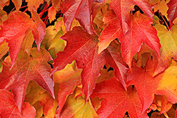
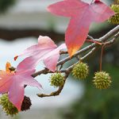
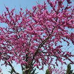

In Southern New Jersey, there are several tree species that thrive in the region’s climate and soil conditions. Planting native species is so important and provides a number of benefits. Native trees are perfectly adapted to the soil and environment. This not only makes for stronger trees, but healthier trees too. Healthy trees are better able to ward off pest infestations and diseases. Lastly, native tree species better support local wildlife by providing safe habitats and nutritious food. As a company that provides tree services in Smithville NJ and the surrounding areas, here’s some of our favorite native trees.
The Red Maple Provides Color and Shade

Red Maple, Acer rubrum, is a NJ native tree that grows well the climate of Southern New Jersey. These trees reach an average height of 50-feet. Their height makes them ideal trees to add shade to your yard. It offers beautiful red foliage in the fall and grows relatively fast. As a native species, it adapts well to the variety of soil types NJ has and is tolerant of wet conditions. Tree services of the Red Maple include occasional pruning as long as it has enough room to grow naturally. If planted too close to a structure, a tree the size of a mature Red Maple can cause serious damage and will eventually need to be removed. If you have the option, be sure to check with one of our tree experts on the best planting location for any tree to avoid dangers later.

An American Sweetgum is Perfect for Shade Also
Liquidambar styraciflua, or the American Sweetgum, is another great shade tree for Southern New Jersey. With a maximum height of 60 to 80 feet and a total width of 40 to 60 feet, the Sweetgum tree provides great shade. American Sweetgum is often used as a street tree. It has attractive star-shaped leaves that turn vibrant shades of red, orange, and yellow in the fall. It prefers moist, well-drained soils, but can also grow well in average soil with a high clay content. One thing the American Sweetgum demands is full sun as it is intolerant of shade. It is always important to think of a plants full size at maturity and the speed of growth before planting. Improper planting locations are a top reason that trees become weak and sickly. Strong, healthy trees require less tree services in Smithville NJ than trees that are struggling to survive.

If You Love Dogwoods, Try an Eastern Redbud
Eastern Redbud (Cercis canadensis) trees are a small, ornamental tree that produce stunning pink or purple flowers in early spring, even before its leaves emerge. It grows well in a variety of soil types and prefers full sun to partial shade. The one thing a Redbud doesn’t like is standing water so be sure there is adequate drainage wherever you are planting it. In fact, Eastern Redbuds are fairly drought tolerant once established. As an ornamental tree, the mature height of a Redbud is only 20-30 feet. Where the tree is planted dictates how much pruning and trimming an Eastern Redbud needs. With professional help, you can train this tree to limit itself to one trunk and grow like a much smaller tree.
Contact Us for Everything Related to Tree Services in Smithville NJ
When selecting trees for your specific location, consider factors such as soil type, sun exposure, and available space. Also think about any specific long-term landscaping requirements you may have. Of course, mature size is a big determining factor when it comes to picking the right location for a new tree. It is always a good idea to consult with local arborists like Ben Bivins Tree Experts who have knowledge of the specific conditions in Southern New Jersey to get the best advice on tree services in Smithville NJ. Contact us today!